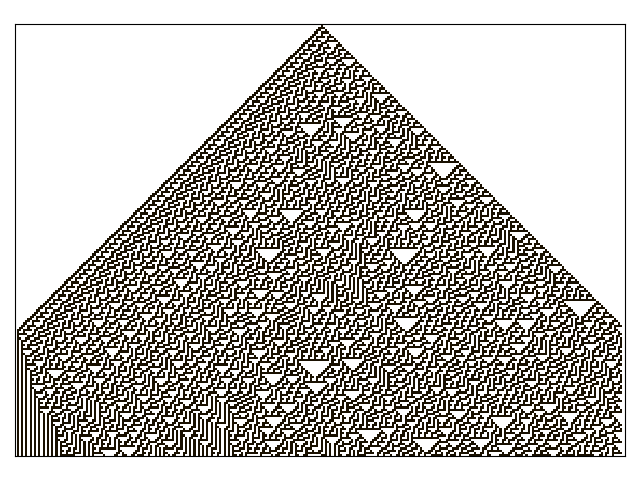
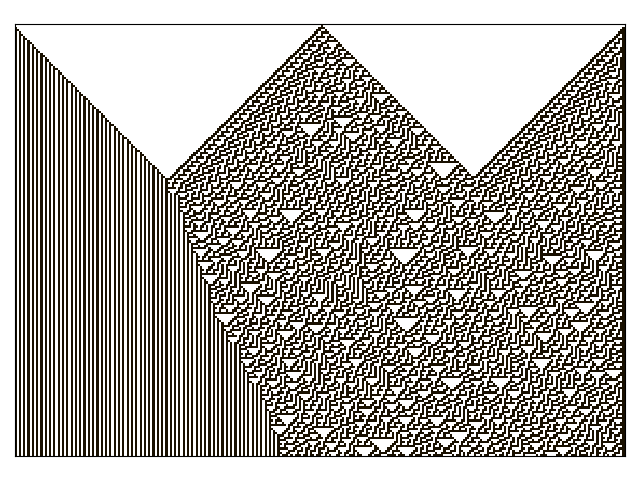
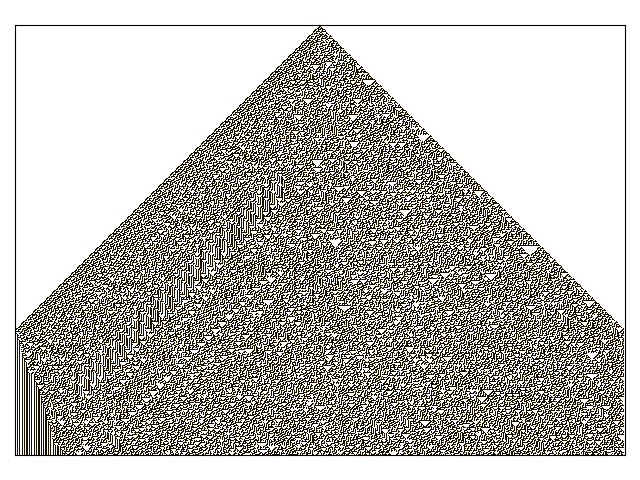

Making the simple complicated is commonplace; making the complicated simple, awesomely simple, that’s creativity.
—Charlie Mingus
Cellular Automata¶
Here is a picture of the predatory snail, Conus Textile:

The pattern on its shell is an example of a 1D cellular automata. The shell is grown by a kind of organic line of printer heads along the shell’s lip. These printer heads, called pigment cells, can extrude colored calcium cement. The color choice of a pigment cell is dependent upon the color choice of it’s two adjacent pigment cells. The rules governing this process are simple, yet a very complex shell color pattern emerges.
A 1D cellular automata exists on a 2D grid of cells; like graphing paper, and it is governed by a simple set of rules. How you color in a square is dependent upon the coloring of the three squares above it. If we decided only to use black and white coloring, a square’s color would be dependent upon eight different permutations of the three squares above it. The governing rules of a 1D cellular automata could be described by drawing out these eight pictures.
But before we begin to fill in our drawings we would have to decide how to start them. Typically you color the middle square of the top line on your graphing paper black, then begin painting the squares of the second line using the rules. Of course, you don’t have to do this, you can start however you like. But how you start is called the initial condition, and as you will see, the initial conditions have a huge effect on the overall emergent pattern of your drawing.
In 1983 Stephen Wolfram discovered a 1D cellular automata which created patterns that look like the shell of the Conus Textile snail. He called this program, Rule 30.
Let’s explore how to make a Rule 30, 1D cellular automata, by looking at the instructions which govern it:
“First, look at each cell and it’s right-hand neighbor. If both of these were white on the previous step, then take the new color of the cell to be whatever the previous color of its left-hand neighbor was. Otherwise, take the new color to be the opposite of that.” [1]
Here are these instructions as a picture:
Note
If you look carefully at the picture version of the rule, you will see two rows of binary numbers, and the reason why rule 30 is called rule 30.
Now let’s start a drawing: we will place a black square in the middle of the first line then follow the rules to fill in the 4 lines below it.
If you look at the diagram and compare it to the rules described as a paragraph, then to the pictures illustrating this same rule, you will see how it works.
Let’s write some Python code that can build something like this.
But before we start, what do we do about the edges of our graphing paper? We could just pretend they aren’t there, making the automata infinite. Or, we could wrap the paper into a tube so that there is no edge. Both of these things have been done before, but I haven’t seen anyone just force a color onto the edge of the graphing paper, like a wall. So, let’s do that, let’s build a wall.
This will give us a chance to have two state machines interact in the same cellular automata. We need two different machines, a rule 30 machine and a wall machine. The wall machine should be able to be white or black.
Let’s design a system, then build it and run it (not necessarily in that order) and see if we can make something new.
High Level Sketches¶
Before we start writing our code let’s sketch out some pictures which will help guide our thinking. We would like to see:
- a small example of the automata running inside of walls.
- a general idea about how to get visual feedback from our code and how that will relate to our automata. (we will figure out the specifics later)
- some drawings of the state machines needed to make the automata.
Automata Running Inside of Walls¶
Here is a small example of the rule 30 automata running inside of walls:
This sketch is a mock-up of the output we would like our code to create. It also shows the rules which govern how the picture is made, some terminology and some examples about how some of the components could be build with Python.
The top of the diagram describes rule 30 in pictures and the main part of the drawing shows an example of the one dimensional automata we want to build.
The one dimensional automata is made up of individual cells, which will be
governed by two different sets of rules. A cell can be derived from either a
Rule30 class which is governed by the rules described at the top of the page
or a Wall class, which is given a color to start at and remains in that color
forever. Once a cell is instantiated, it is started in the color we want it to
appear in on our drawing. The walls of the diagram are colored orange so that
we can distinguish them from the bulk of the drawing which is made up of rule 30
cells.
We would like our code to be able to run for a programmable number of
generations. A single generation is a row of the one dimensional automata.
The Next event, will be used to tell the code representing the diagram, to
build its next generation.
We would also like our code to be able to build any width of cells.
The Z object represents the 2D binary matrix which will describe our
drawing. This matrix will be used to analyze our automata as it runs.
High Level Design Diagram¶
Now that we know what kind of output we want, we need to think about how we will structure a program to give us this output.
We need something that can make our one dimensional cellular automata and we need some way to look at it. Let’s call the thing that we will use to visualize our automata, a canvas.
Our canvas will be given an automata object which it will draw. Our automata object will have many rule 30 objects and many wall objects.
Here is what we wrote above, expressed as a UML diagram:
The Canvas class has a OneDCellularAutomata class. This
OneDCellularAutomata class has many Rule30 and Wall classes.
Seems simple enough.
Let’s build the Canvas class so that it can both draw our diagrams and make
video animations. Let’s make the OneDCellularAutomata responsible for
creating any automata given a Wall class and a Rule class.
Statemachines Needed to Build Rule 30 in Walls¶
We have drawn the Rule30 and Wall classes as abstract blocks in the
previous high level diagram. But we know how they work, so let’s re-draw them
now in more detail:
The state machine under the Rule30 class will provide the behaviour
described by the squares at the top of the page. The state machine under the
Wall class consists of two states which can only be gotten to using the
start_at method, no event will cause a transition between these states. The
Wall objects are intended to interface with the Rule30 objects so that a
Rule30 cell can’t tell if it is working with an actual machine or just a
wall.
Design and Code¶
Now that we know what we want to build, let’s make our designs more detailed and write the Python code required to make the design work.
Canvas Class¶
The Canvas class will provide visual feedback.
But, how will we build a Canvas class to get the feedback needed to see what is
going on with our program?
If we were using Stephen Wolfram’s Mathematica software, this work would be trivial. Even if we were using Matlab, it wouldn’t be too hard to see these automata, but we are using Python so we will have to stitch a few things together before we can visualize our work.
Let’s go technology shopping.
A few years ago Python borg’d
Matlab, into its numpy, scipy and matplotlib packages, so the Matlab
type interfaces have been assimilated into the Python collective: resistance is
futile. We can use the numpy and matplotlib libraries to get the Matlab
features we need to build and animate our automata.
The matplotlib library can animate graphs so we will use that. The graphing
paper look that we want is provided by its matplotlib.pcolormesh graphing
object so we will use that too. Animations are provided by the
matplotlib.FuncAnimation class, which takes a reference to the figure you
are drawing on, information about how many frames you want in your movie and how
often you want to show them, and some callback functions that affect the data
(your picture) for each frame. The callback functions will be very useful,
because it means we can pull the operation of our automata away from the
Canvas class and we can make the animation callback call out to a Python
coroutine, so we can run our automata forever (if we wanted that).
Under the hood matplotlib calls out to FFmpeg, which is some open source
software that makes videos. Let’s install what we need and get back to our
design:
sudo apt-get install ffmpeg
pip install numpy
pip install matplotlib
Note
I’m assuming you are working within a virtual enviroment. If you are on
windows, go and get the ubuntu app, and run this code within your Windows
Linux Subsystem (WLS). If you are on a mac, you can use brew to get
ffmpeg.
Here is a UML drawing of the Canvas class:
The Canvas class will have a FuncAnimation object and a
LinearSegmentedColormap (used for making colors), and it shows us how we
want to make the object and how we want to use it with the run_animation and
save methods.
It also shows us that the Canvas calls will have a OneDCellularAutomata
object, which will be created elsewhere, then passed to it.
import pathlib
import matplotlib
import matplotlib.pyplot as plt
import matplotlib.animation as animation
class Canvas():
def __init__(self, automata, title=None):
'''Animate 2D graphing paper, or static file describing a automata
Given an autonoma, which has a ``_Generation`` coroutine generator, an
animation can be build by calling this coroutine for as many generations
are required.
**Note**:
This ``automata`` object needs to provide a ``_Generation`` method
which returns a coroutine which can be called with ``next``.
**Args**:
| ``automata`` (OneDCellularAutomata):
| ``title=None`` (string): An optional title
**Returns**:
(Canvas): this object
**Example(s)**:
.. code-block:: python
eco1 = Canvas(autonoma)
eco1.run_animation(1200, interval=10) # 10 ms
eco1.save('eco1.mp4')
eco2 = Canvas(automata)
eco2 = save('eco2.pdf, generations=100)
'''
self.fig, self.ax = plt.subplots()
if title:
self.ax.set_title(title)
self.automata = automata
self.generation = automata._Generation()
self.ax.set_yticklabels([])
self.ax.set_xticklabels([])
self.ax.set_aspect(1.0)
self.ax.xaxis.set_ticks_position('none')
self.ax.yaxis.set_ticks_position('none')
self.fig.tight_layout()
# seventies orange/browns looking color map
self.cmap = matplotlib.colors.LinearSegmentedColormap.from_list(
'oranges', ['#ffffff', '#ffa501', '#b27300', '#191000'])
self.grid = self.ax.pcolormesh(next(self.generation), cmap=self.cmap)
def init(self):
'''animation initialization callback
**Note**:
This not needed by our animation, but it is needed by the library we
are calling, so we just stub it out
**Returns**:
(tuple): (self.grid,)
'''
return (self.grid,)
def animate(self, i):
'''animation callback.
This method will be called for each i frame of the animation. It creates
the next generation of the automata then it updates the pcolormesh using
the set_array method.
**Args**:
| ``i`` (int): animation frame number
**Returns**:
(tuple): (self.grid,)
'''
self.Z = next(self.generation)
# set_array only accepts a 1D argument
# so flatten Z before feeding it into the grid arg
self.grid.set_array(self.Z.ravel())
return (self.grid,)
def run_animation(self, generations, interval):
'''Run an animation of the automata.
**Args**:
| ``generations`` (int): number of automata generations
| ``interval`` (int): movie frame interval in ms
**Example(s)**:
.. code-block:: python
eco = Canvas(automata)
eco.run_animation(1200, interval=20) # 20 ms
'''
self.anim = animation.FuncAnimation(
self.fig, self.animate, init_func=self.init,
frames=generations, interval=interval,
blit=False)
def save(self, filename=None, generations=0):
'''save an animation or run for a given number of generations and save as a
static file (pdf, svg, .. etc)
**Note**:
This function will save as many different static file formats as are
supported by matplot lib, since it uses matplotlib.
**Args**:
| ``filename=None`` (string): name of the file
| ``generations=0`` (int): generations to run if the files doesn't have
| an 'mp4' extension and hasn't been
| animated before
**Example(s)**:
eco1 = Canvas(autonoma)
eco1.run_animation(50, 10)
eco1.save('rule_30.mp4)
eco1.save('rule_30.pdf)
eco2 = Canvas(autonoma)
eco1.save('rule_30.pdf', generations=40)
'''
if pathlib.Path(filename).suffix == '.mp4':
self.anim.save(filename)
else:
if self.automata.generation > 0:
for i in range(self.automata.generations):
next(self.generation)
self.ax.pcolormesh(self.automata.Z, cmap=self.cmap)
plt.savefig(filename)
Note
On construction: I didn’t write the Canvas class out of thin air, I
created a 2 dimensional array and some functions that would randomize this
array, then I fed these functions into the code that I built up using examples
from the internet until I got something working. Only then did I feed it the
OneDCellularAutomata class, which originally didn’t use a co-routine; it
was added later.
The OneDCellularAutomata Class¶
Let’s give our basic design another look:
The OneDCellularAutomata object will be responsible for applying the rules
to our graphing paper, and for setting it into its initial condition (the black
square in the middle of the top line).
To do this OneDCellularAutomata will provide a two-dimensional array, Z,
containing color codes, to be used by our Canvas to draw things. It also builds
a lot of Rule30 and Wall state machines and links them to other machines
so that they can read the left.color and right.color attributes of their
adjacent cells. OneDCellularAutomata needs to set up some initial
conditions; how the machines are started on the first line of our graphing
paper. The Rule30 state machines respond to Next events, which cause
them to react and change if they need to change, so the OneDCellularAutomata
will need to dispatch this event into all of the Rule30 objects to make a
new line as the automata propagate downward.
To make the OneDCellularAutomata object generic, we will feed it its
automata rule and wall rules as classes. To make the wall behaviour
parameterizable, I’ll add some new wall rule classes that hold the left and
right colors in their class attributes:
Here is a UML diagram of the OneDCellularAutomata class:
There is a bunch of stuff in this diagram that I don’t know how to draw using UML. For instance, how do I show a class that I have sent it a class, so it knows how to build something, using the class I just gave it? How do I draw something that makes a co-routine?
Well, I don’t know, so I will just scribble down something that isn’t too confusing and explain what I meant here with a few words:
The few key takeaways from the drawing are how the constructor works, we feed it
in the rule and wall classes so that it can generically construct automata. We
also show the function that returns the co-routine. Each time next is
called it advances to the next yield statement. So, the first time the
coroutine is activated, it will initialize the automata, and then every
activation after that will cause it to descend one row down.
Here is the code:
import numpy as np
from miros import Event
White = 0.1
Black = 0.9
class OneDCellularAutomata():
def __init__(self,
generations,
cells_per_generation=None,
initial_condition_index=None,
machine_cls=None,
wall_cls=None,
):
'''Build a two dimensional cellular automata object which can be advanced
with a coroutine.
**Args**:
| ``generations`` (int): how many generations to run (vertical cells)
| ``cells_per_generation=None`` (int): how many cells across
| ``initial_condition_index=None`` (int): the starting index cell (make
| black)
| ``machine_cls=None`` (Rule): which automata rule to follow
| ``wall_cls=None`` (Wall): which wall rules to follow
**Returns**:
(OneDCellularAutonomata): an automata object
**Example(s)**:
.. code-block:: python
# build an automata using rule 30 with white walls
# it should be 50 cells across
# and it should run for 1000 generations
autonoma = OneDCellularAutomata(
machine_cls=Rule30,
generations=1000,
wall_cls=WallLeftWhiteRightWhite,
cells_per_generation=50
)
# to get the generator for this automata
generation = automata.make_generation_coroutine()
# to advance a generation (first one will initialize it)
next(generation)
# to get the color codes from it's two dimension array
automata.Z
# to advance a generation
next(generation)
'''
self.machine_cls = machine_cls
self.wall_cls = wall_cls
if machine_cls is None:
self.machine_cls = Rule30
if wall_cls is None:
self.wall_cls = WallLeftWhiteRightWhite
self.generations = generations
self.cells_per_generation = cells_per_generation
# if they haven't specified cells_per_generation set it
# so that the cells appear square on most terminals
if cells_per_generation is None:
# this number was discovered through trial and error
# matplotlib seems to be ignoring the aspect ratio
self.cells_per_generation = round(generations*17/12)
self.initial_condition_index = round(self.cells_per_generation/2.0) \
if initial_condition_index is None else initial_condition_index
self.generation = None
self.left_wall=self.wall_cls.left_wall
self.right_wall=self.wall_cls.right_wall
def make_and_start_left_wall_machine(self):
'''make and start the left wall based on the wall_cls'''
wall = self.wall_cls()
wall.start_at(self.wall_cls.left_wall)
return wall
def make_and_start_right_wall_machine(self):
'''make and start the right wall based on the wall_cls'''
wall = self.wall_cls()
wall.start_at(self.wall_cls.right_wall)
return wall
def initial_state(self):
'''initialize the 1d cellular automata'''
Z = np.full([self.generations, self.cells_per_generation], Black,
dtype=np.float32)
# create a collections of unstarted machines
self.machines = []
for i in range(self.cells_per_generation-2):
self.machines.append(self.machine_cls())
left_wall = self.make_and_start_left_wall_machine()
right_wall = self.make_and_start_right_wall_machine()
# unstarted machines sandwiched between unstarted boundaries
self.machines = [left_wall] + self.machines + [right_wall]
# start the boundaries in their holding color
self.machines[0].start_at(fake_white)
self.machines[-1].start_at(fake_white)
# start most of the machines in white except for the one at the
# intial_condition_index
for i in range(1, len(self.machines)-1):
if i != self.initial_condition_index:
self.machines[i].start_at(white)
else:
self.machines[i].start_at(black)
# we have created a generation, so count down by one
self.generation = self.generations-1
# create some initial walls in Z
Z[:, 0] = self.machines[0].color_number()
Z[:, Z.shape[-1]-1] = self.machines[-1].color_number()
self.Z = Z
def next_generation(self):
'''create the next row of the 1d cellular automata'''
Z = self.Z
if self.generation == self.generations-1:
# draw the first row
for i, machine in enumerate(self.machines):
Z[self.generations-1, i] = machine.color_number()
else:
# draw every other row
Z = self.Z
new_machines = []
for i in range(1, (len(self.machines)-1)):
old_left_machine = self.machines[i-1]
old_machine = self.machines[i]
old_right_machine = self.machines[i+1]
new_machine = self.machine_cls()
new_machine.start_at(old_machine.state_fn)
new_machine.left = old_left_machine
new_machine.right = old_right_machine
new_machines.append(new_machine)
left_wall = self.make_and_start_left_wall_machine()
right_wall = self.make_and_start_right_wall_machine()
new_machines = [left_wall] + new_machines + [right_wall]
for i, machine in enumerate(new_machines):
machine.dispatch(Event(signal=signals.Next))
Z[self.generation, i] = machine.color_number()
self.machines = new_machines[:]
self.Z = Z
self.generation -= 1
def make_generation_coroutine(self):
'''create the automata coroutine'''
self.initial_state()
yield self.Z
while True:
self.next_generation()
yield self.Z
Note
On construction: Initially I build the OneDCellularAutomata without a
coroutine.
Rule30 and the Wall Classes¶
Rule30 is a class which describes the attributes and methods needed by our
rule30 state machine. The rule30 state machine really isn’t described anywhere
as an individual entity, it is two callback functions that attach to a
Rule30 object. You can see it here:
To see if the rule 30 machine is designed properly, put your eyes on one of the
clusters-of-four-squares at the top of the diagram. Now imagine the state
machine was started in the color of the middle of the top three squares of this
cluster. Send the Next event to the machine and see if you can get it to
transition to the color of the bottom square of the cluster.
Let’s do the first one together:
If you repeat this exercise for each of the cluster-of-four-squares, and you are satisfied, then this state machine’s design will give us the rule 30 behavior.
The wall is an even simpler machine, it starts in one color state and remains that way forever.
Here is the code for our Rule30 and Wall classes:
from miros import Event
from miros import signals
from miros import HsmWithQueues
from miros import return_status
class Wall(HsmWithQueues):
def __init__(self, name='wall'):
super().__init__(name)
self.color = None
def color_number(self):
return Black if self.color == 'black' else White
def fake_white(wall, e):
status = return_status.UNHANDLED
if(e.signal == signals.ENTRY_SIGNAL):
wall.color = 'white'
status = return_status.HANDLED
elif(e.signal == signals.Next):
status = return_status.HANDLED
else:
wall.temp.fun = wall.top
status = return_status.SUPER
return status
def fake_black(wall, e):
status = return_status.UNHANDLED
if(e.signal == signals.ENTRY_SIGNAL):
wall.color = 'black'
status = return_status.HANDLED
elif(e.signal == signals.Next):
status = return_status.HANDLED
else:
wall.temp.fun = wall.top
status = return_status.SUPER
return status
class WallLeftWhiteRightWhite(Wall):
left_wall = fake_white
right_wall = fake_white
class WallLeftWhiteRightBlack(Wall):
left_wall = fake_white
right_wall = fake_black
class WallLeftBlackRightWhite(Wall):
left_wall = fake_black
right_wall = fake_white
class WallLeftBlackRightBlack(Wall):
left_wall = fake_black
right_wall = fake_black
class Rule30(Wall):
def __init__(self, name='cell'):
super().__init__(name)
self.left = None
self.right = None
self.color = None
def white(cell, e):
status = return_status.UNHANDLED
if(e.signal == signals.ENTRY_SIGNAL):
cell.color = 'white'
status = return_status.HANDLED
elif(e.signal == signals.Next):
if((cell.right.color == 'black' and
cell.left.color == 'white') or
(cell.right.color == 'white' and
cell.left.color == 'black')):
status = cell.trans(black)
else:
status = return_status.HANDLED
else:
cell.temp.fun = cell.top
status = return_status.SUPER
return status
Running and Visualizing the Cellular Automata¶
Now that we have all the parts we need let’s stitch them together and see what happens. We will build an automata using rule 30 with some white walls. Then we will feed the automata into a canvas, and use the canvas to print a png file, a pdf file and an mp4 movie:
generations = 200
automata = OneDCellularAutomata(
generations=generations,
machine_cls=Rule30,
wall_cls=WallLeftWhiteRightWhite)
ecosystem = Canvas(automata)
ecosystem.run_animation(generations, interval=100) # 100 ms
eco.save('rule_30_white_walls_200_generations.mp4')
eco.save('rule_30_white_walls_200_generations.pdf')
eco.save('rule_30_white_walls_200_generations.png')
Here is the movie:
Here is the pgn diagram, click on it to see the pdf version of the same picture:
Let’s try it with black walls
generations = 200
automata = OneDCellularAutomata(
generations=generations,
machine_cls=Rule30,
wall_cls=WallLeftBlackRightBlack)
ecosystem = Canvas(automata)
ecosystem.run_animation(generations, interval=50) # 50 ms
eco.save('rule_30_black_walls_200_generations.mp4')
eco.save('rule_30_black_walls_200_generations.pdf')
eco.save('rule_30_black_walls_200_generations.png')
Here is a link to the resulting video, and below you can see what happens when we run 200 generations of rule 30 with black walls.
Running it again for 500 generations and with white walls results in this:
On this diagram we can see order imposing itself from the left white wall, and a kind of repeating pattern on the left side of the triangle which emerges from our initial conditions. The center and right part of the results seem to be full of disorder.
Note
On limitations:
The pdf resulting from the 500 generation run of our automata is over 5 MB; this is a lot of data to add to your computer if you want to clone the miros library, so I will refrain from going bigger.
It took a long time to render the 500 generation automata. I don’t know where the computational bottle-neck is coming from; if it were important to me I could profile the different parts of the code until I found my issue, but the issue could be Python itself. Mathematica has no such obvious limitation. If you want to do a deep dive into this subject and don’t have the resources to buy a Mathematica licence, you can buy a Raspberry Pi with the NOOBs OS, then VNC onto the device from your desktop. Wolfram Alpha is being given away on this platform.
The Nothing (n-phenomenon)¶
The white and black walls force order into the automata; causing a kind of pattern crystallization to propagate across our results. We lose the incredible complexity of rule 30, to this ordering pattern, which I think of as the nothing. Order imposes itself like a prion does in the brain of someone with Alzheimer’s. We have seen that this effect takes place with both white and black walls, the key is that there is an inflexible minority on the walls, imposing itself on a flexible majority. (Nassim Nicholas Taleb calls this kind of thing a normalization.)
I will call this destructive ordering, the n-phenomenon.
Note
Our universe seems to have set rules (the laws of physics) but it will not run into this n-phenomenon, repetition issue; because it doesn’t seem to be confined within walls or have limited memory: the universe is expanding at an accelerating rate.
Maybe it would have been wiped out by an n-phenomenon if it weren’t expanding.
Let’s study it in a bit more detail. I will shrink the width of our graphing paper to 30 cells and watch the n-phenomenon completely destroy rule 30’s beautiful complexity over 100 generations.
generations = 100
automata = OneDCellularAutomata(
generations=generations,
machine_cls=Rule30,
wall_cls=WallLeftWhiteRightWhite,
cells_per_generation=30)
ecosystem = Canvas(automata)
ecosystem.run_animation(generations, interval=500) # 500 ms
eco.save('rule_30_white_walls_100_generations_width_30.mp4')
It seems that the n-phenomenon has a pattern velocity; resulting in an angle. My protractor tells me that the ordered crystallization, caused by the white minority at the wall, spreads downward at an angle of about 20 degrees.
If we reduce the width of the graphing paper, this pattern seems to advance quicker into the chaos:
generations = 100
automata = OneDCellularAutomata(
generations=generations,
machine_cls=Rule30,
wall_cls=WallLeftWhiteRightWhite,
cells_per_generation=15)
ecosystem = Canvas(automata)
ecosystem.run_animation(generations, interval=500) # 500 ms
eco.save('rule_30_white_walls_100_generations_width_30.mp4')
Compare the 30 cell width result to the 15 cell width result:
Let’s try going thinner, here is a 15 cell width result beside a 10 cell width result:
So the angle of the n-phenomenon does not necessarily shrink with a reduction in the graphing paper’s width.
Let’s write some code that can calculate the angle of the n-phenomenon.
We will set the walls to be white and the initial condition is a single black rule 30 machine, sandwiched between other rule 30 machines started in the white state:
The blue object in the diagram represents the disordered part of a rule 30 simulation contained by white walls. The cyan circle is the angle, in degrees, we are searching for.
class OneDCellularAutomataWithAngleDiscovery(OneDCellularAutomata):
def __init__(self,
generations,
cells_per_generation=None,
initial_condition_index=None,
machine_cls=None,
wall_cls=None):
super().__init__(
generations,
cells_per_generation,
initial_condition_index,
machine_cls,
wall_cls)
self.black_mask = np.array([Black], dtype=np.float32)
self.white_mask = np.array([White], dtype=np.float32)
self.n_mask = np.concatenate(
(self.white_mask, self.black_mask), axis=0)
self.n_angle = 90
def build_next_mask(self):
if abs(self.n_mask[-1] - White) < 0.001:
self.n_mask = np.concatenate(
(self.n_mask, self.black_mask), axis=0)
else:
self.n_mask = np.concatenate(
(self.n_mask, self.white_mask), axis=0)
def update_angle(self):
previous_generation = self.generation+1
row_to_check = self.Z[previous_generation]
sub_row_to_check = row_to_check[0:len(self.n_mask)]
if np.array_equal(self.n_mask, sub_row_to_check):
self.nothing_at_row = self.generations-previous_generation + 1
adjacent = self.nothing_at_row - self.cells_per_generation / 2.0
opposite = self.cells_per_generation
self.n_angle = math.degrees(math.atan(opposite/adjacent))
self.build_next_mask()
def next_generation(self):
super().next_generation()
self.update_angle()
With this code we can plot how the angle of the n-phenomenon changes as a function of the graphing paper width:
Note
The angle is still an approximation, since as you will see shortly, the n-phenomenon is not a straight line.
Here is a video of 196 different renderings of rule thirty within white walls. The video starts with 2 rule 30 machines squished between two white walls. For each frame advance of the video, a cell is added to the width of the graphing paper and the automata is restarted an run with a black machine at the top and middle of the simulation.
The top part of the video remains constant as the width of the graphing paper expands, which makes sense, since that part of the diagram experiences the same set of initial conditions. What is surprising is how avalanches perpetuate through the diagram as the width of the graphing paper increases. The left side will cause an avalanche for two frames, then the right side will cause an avalanche for two frames, then the left side again and so on and so forth.
You can see when the patterns are going to shift by watching for the “left white _|” and the “black right L”. If either of these mini-patterns appear, it will tell you that the avalanche on their side of the diagram is over, and to move your eyes to the other side of the page for the next frame.
As tempting as it is to think that this 2 beat oscillation is a feature of the automata, it probably isn’t. The 2 beat oscillation is the result of the divide-by-2-and-round-the-result mixed with the expansion-of-the-size-of-the-page. Essentially we are changing the initial conditions on one side of the page for 2 beats, then the other side for two beats. Because rule 30 creates a chaotic system that is highly sensitive to its initial conditions we have avalanches of change in response to a new partial-starting-state. The initial conditions remain the same for the top part of the diagram, but are expressed when the rule 30 body hits the new wall condition.
The video makes me think about time traveling stories. If we imagine the new starting condition as the location of a time traveler arriving in the past from the future (to change one thing and then leave), we can see how he effects history as the change-avalanche on his side of the video frame. The entire past isn’t changed, just the side that was within the causal cone of his avalanche.
The rule 30 states only one square can be effected each generation; so the maximum theoretical propagation of a historical distortion is 45 degrees. In our reality we also have such a causal limitation, it is the speed of light, c.
Here is another video of 196 different renderings with a white left wall and black right wall:
Black left, white right wall:
Left and right walls set to black:
Random Number Generation¶
Let’s try and build a random number generator using a simple Python program.
First we should discuss our constraints. Rule 30 provides an interesting chaotic phenomenon, we would like to use this rule versus another rule, or we may accidentally lose our ability to generate chaos. If we make our graphing paper very wide, then we need more computer memory and more computing resources to construct the next generation of automata. If we use walls, then we have order imposing itself back into the body of the chaos, as the n-phenomenon, over only a few generations. Even if we can perfectly manage this n-phenomenon, there are only so many permutations that can be held within the bounds of our rectangle, and if we repeat a pattern we are not generating a random number, but rather a long periodic number; a pseudo-random number.
So there seems to be a theoretical upper bound to what we can generate using
limited memory given that the rule doesn’t change and the state of the program
is held within a bounded rectangle. My first guess at what our upper bound is:
2**n where n is the number of states within the rectangle, and the 2
is selected because we are only tracking two colors, black and white.
First things first, let’s deal with the n-phenomenon coming from the walls. We have control of the walls, and we have a chaos generator, so let’s feed the chaos back into the walls.
We can write the colors of our center column into a deque, and use the top two
colors of this deque to set the color of the walls. Let’s call this deque the
core_colors. To begin with we set all of the core_colors to white, so
that the walls will remain white for the first len(core_colors) generations.
For every Next event, the core_colors deque is pushed one spot downward
into the center of our automata, where it is painted with the color of the core
at that spot.
We will use the last two elements of our core_colors to determine the color
of our walls. These last two spots will act as a 2 digit binary number, holding
the values of WallLeftWhiteRightWhite, WallLeftWhiteRightBlack,
WallLeftBlackRightWhite and WallLeftBlackRightBlack. How this rule is
applied isn’t that important, it just has to consistently map the center’s chaos
onto the walls.
So, how long do we make this core_colors deque? My intuition is to feed it
as much chaos as rule 30 can generate, then feed this back into the automata
before the n-phenomenon destroys the disorder.
Every intuition I have had so far about rule 30 has been wrong, so I’ll probably be wrong about this too. I need some way to to disprove my prediction, and I can’t eye-ball repeating patterns reliably beyond 30 generations, so I will adjust the code to inform on it’s own periodicity using an autocorrelation.
| Cell Width and angle | Queue Depth | Unique Pattern Duration | Repeats? |
|---|---|---|---|
| 10 (35.7 degrees) | 2 3 4 5 6 7 8 9 10* 11 12 13 |
37 51 14 16 35 30 65 24 52 110 30 32 |
True |
| 11 (44.4 degrees) | 2 3 4 5 6 7 8 9 10 11 12 13* 14 15 16 17 18 |
53 5 24 57 28 30 32 27 36 42 80 42 84 46 48 50 52 |
True |
| 12 (36.0 degrees) | 2 3 4 5 6 7 8 9 10 11 12* 13 14 15 16 17 18 |
16 35 24 26 39 58 19 14 46 36 53 32 42 276 46 13 25 |
True |
| 13 (36.0 degrees) | 2 3 4 5 6 7 8 9 10 11 12* 13 14 15 16 17 18 19 20 21 22 23 24 |
16 5 9 12 46 34 15 65 139 24 44 121 35 157 318 465 278 76 225 197 384 30 162 |
True |
| 14 (30.2 degrees) | 2 3 4 5 6 7 8 9 10 11 12 13* 14 15 16 17 18 19 20 21 22 23 24 25 26 27 28 29 |
42 43 13 20 26 9 32 176 271 279 20 236 395 66 208 13 338 195 228 98 210 255 1450 32 1223 287 1012 610 |
True |
| 15 (39.2 degrees) | 4 5 6 7 8 9 10 11 12 13 14 15 16* 17 18 19 20 21 22 23 24 25 |
44 160 134 60 58 48 52 200 160 74 429 541 1022 73 17 271 232 534 564 1210 258 630 |
True |
| 16 (34.0 degrees) | 2 3 4 5 6 7 8 9 10 11 12 13 14 15 16* 17 18 19 20 21 22 23 24 25 26 |
111 18 42 123 74 35 288 310 42 582 46 40 86 252 378 180 900 288 541 1746 1017 117 1162 551 1182 |
True |
| 17 (35.3 degrees) | 5 6 7 8 9 10 11 12 13 14 15 16 17 18* 19 20 21 22 23 24 25 |
36 47 270 164 92 42 179 433 448 238 120 60 1054 441 1149 390 1582 600 3305 214 2810 |
True |
| 18 (27.7 degrees) | 4 5 6 7 8 9 10 11 12 13 14 15 16 17* 18 19 20 21 22 23 24 25 26 27 28 29 30 |
97 90 158 82 192 319 70 101 200 586 597 24 430 860 459 605 532 609 2356 1730 908 734 1513 1653 165 954 682 |
True False True True True True True True True True True True True True True True True True True True True True True |
| 19 (27.5 degrees) | 4 5 6 7 8 9 10** 11 12 13 14 15 16 17 18* 19 20 21 22 23 24 25 26 27 28 |
11 75 91 99 43 33 33 144 134 70 252 250 155 677 1943 1299 130 2689 5168 1602 922 2080 2895 5341 3520 |
True |
| 20 (27.5 degrees) | 4 5 6 7 8 9 10 11 12 13 14 15 16 17 18* 19 20 21 22 23 24 25 26 27 28 29 30 |
11 75 91 99 43 279 213 202 327 792 490 1436 1349 556 1171 172 333 2912 2054 5769 1546 579 400 4535 9075 9709 1697 |
True |
| 21 (27.5 degrees) | 2 3 4 5 6 7 8 9 10 11 12 13 14 15 16 17 18 19* 20 21 22 23 24 25 26 27 28 29 30 |
615 333 2912 422 534 113 429 82 79 551 862 2159 91 526 1327 837 1429 1173 220 3706 300 27 3090 6036 44 3416 9032 2067 9151 |
True |
| 22 (24.0 degrees) | 2 3 4 5 6 7 8 9 10 11 12 13 14 15 16 17 18 19 20 21 22 23 24 25 26 27 28 29 30 31 |
113 58 350 120 197 135 169 47 123 330 219 981 569 763 398 694 584 373 357 759 433 266 204 4395 527 1138 3383 3562 148 4611 |
True True True True False False False True False False True False False False False True True True False False False False True False True True False False False False |
** means, that there is a kind of n-phenomenon pattern that emerges after some time, but before this a nice, richly chaotic pattern existed.
| [1] | Stephen Wolfram (2002). A New Kind of Science. (p27) |

{kind=link}